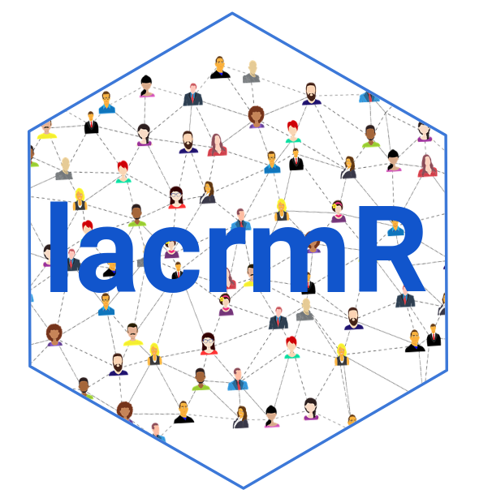

lacrmr 
Get the information from your Less Annoying Customer Relationship Management API in a tidy data way. Useful for getting metrics, visualize your goals, create reports and automate your workflow.
Overview
If you have a business or an organization that uses Less Annoying CRM to manage contacts but also you are an R user, probably you will want to get your customer relationship data into R and do your own analysis or even to automate your monthly reports.
For this you will need to connect to the Less Annoying CRM API and deal with the json file to take it to a tidy format as a first step.
This package provides you with 4 functions that makes this process easier. These are and will return:
| Function | Return |
|---|---|
| get_pipeline_report() | It will provide you with a dataframe containing the data correspondant to the pipeline that you need. |
| get_account_information | This will give you the information of your account. |
| get_contact_information | Information related to the contact you are searching for. |
| search_contacts | If you want to make sure a contact exists on your CRM, this function will return an statement confirming the contact. |
Credentials:
At first you will need to obtain your user code and API token from your Less Annoying CRM. Once you have your credentials, you will be able to use the functions and take your lacrm data into R!
If you need advice on how to do this and also what are the best practices to not leave your credentials in your code, check the package vignette!
Usage
# Load the lacrmr package in your session
library(lacrmr)
## Get the data from a specific pipeline
sales <- get_pipeline_report(user_code = "12454",
api_token = "25632",
pipelineid = "458742fgg2544")
## Use glimpse function to check the data frame
dplyr::glimpse(sales)
#> Observations: 7
#> Variables: 33
#> $ result_contact_id <chr> "35041909076033466731615…
#> $ result_user_id <chr> "334595", "435944", "334…
#> $ result_company_id <lgl> NA, NA, NA, NA, NA, NA, …
#> $ result_background_info <chr> "", NA, "", NA, NA, NA, …
#> $ result_birthday <chr> NA, "", NA, "", "", "", …
#> $ result_is_company <chr> "1", "1", "1", "1", "1",…
#> $ result_company_name <chr> "Mambi business", "Mambi…
#> $ result_industry <chr> "", "Pets", "Education",…
#> $ result_num_employees <chr> "", "", "", "", "", "", …
#> $ result_creation_date <chr> "2018-02-26 21:02:38", "…
#> $ result_edited_date <chr> "2019-12-30 16:15:21", "…
#> $ result_original_google_id <lgl> NA, NA, NA, NA, NA, NA, …
#> $ result_employer_name <lgl> NA, NA, NA, NA, NA, NA, …
#> $ result_company_employees <lgl> NA, NA, NA, NA, NA, NA, …
#> $ result_pipeline_id <chr> "35049658326669756459004…
#> $ result_status_id <chr> "35058957116029205737561…
#> $ result_priority <chr> "3", "2", "2", "2", "2",…
#> $ result_last_note <chr> "20191217 - mambi propon…
#> $ result_start_date <chr> "2019-12-18 09:11:35", "…
#> $ result_last_update <chr> "2019-12-18 09:12:05", "…
#> $ result_num_updates <chr> "2", "4", "14", "1", "14…
#> $ result_start_status_id <chr> "35058957116029205737561…
#> $ result_last_updated_by <chr> "334595", "435944", "435…
#> $ result_sort_order <chr> "0", "2", "2", "2", "2",…
#> $ result_show_in_reports <chr> "1", "1", "1", "1", "1",…
#> $ result_custom_opportunity_data_new <chr> "{\"35729357277614122524…
#> $ result_custom_contact_data_new <chr> "{\"35729357275677214396…
#> $ result_pipeline_item_id <chr> "36355809253925838301030…
#> $ result_status_name <chr> "Identificado", "Contact…
#> $ success <lgl> TRUE, TRUE, TRUE, TRUE, …
#> $ result_custom_fields_priority <chr> "High Priority", "Medium…
#> $ result_custom_fields_descripcion_oportunidad <chr> "Oportunidades de colabo…
#> $ result_custom_fields_valor <chr> "4000", "", "8000", "", …Once you are done you will have a data frame with your customer relationship data. This will give you the opportunity to create your own visualizations or even your personalized dashboard.
Have fun analyzing your customer relationship data!
Getting help
If you have problems using the functions or find a bug, please let us know with a minimal reproducible example on github or send ud an email to hola@ixpantia.com